Conversione di una TAbella in un altro FormatoVediamo ora come sia possibile Convertire una tabella e quindi un database in un altro formato. Faremo l'ipotesi di voler convertire la tebella "Tabella" del database HSQL realizzato precedentemente in HelloWorld, nel formato CSV, cioè formato testo tabulato. Per prima cosa dovremo realizzare un database CSV con una tabella in cui andremo ascrivere tutti i record. Non è necessaruio che siano presenti tutti gli stessi campi della tabella sorgente, ma solo quelli che si intende effettivamente esportare. Il formato deve essere coerente con il formato origine. A tale scopo realizziamo prima la tabella CSV che accoglierà i record. 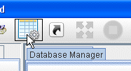 |
Clicchiamo su Nuovo Database. 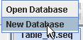 |
Scegliamo CSV, come tipo di databse e inseriamo un nome. Il nome, nel caso del Database CSV, è un'informazione inutile perche il database sarà costituito da tanti file quante sono le tabelle. Tali file verranno messi nella cartella Data, ma è possibile cambiarla a proprio piacimento. 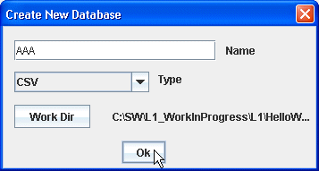 |
Creamo una nuova tabella per ospitare i dati. 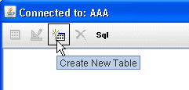 |
Scegliamo un nome per la tabella. 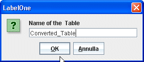 |
Aelezionioamola e andiamo a editare la struttura. 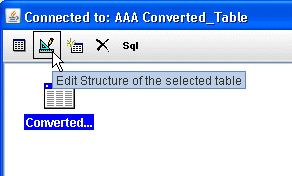 |
Inseriamo 4 campi di tipo testo (nel Caso CSV possono solo essere testo e la dimensione sarà dinamica). 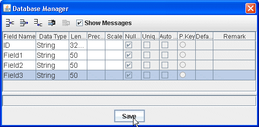 |
Ora che abbiamo la tabella in cui voliamo esportare per fare la conversione HSQL->CSV, aggiungiamo una nuova riga alla sequenza Table_IO, selezioniamola e andiamo a segliere Table->Table nel tipo di Azione. 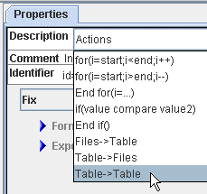 |
| Poi selezioniamo la tabella sorgente e
quella destinazione cliccando alla destra, sulla scritta
"no set". 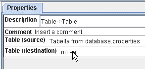 |
Ora clicchiamo alla destra dei parametri di configurazione per selezionale i campi da esportare e dove esportarli. 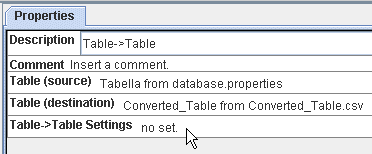 |
| Ora bisogna selezionare i campi dell
atabella sorgente che intendiamo esportare, e quelli
della tabella destinazione in cui esporteremo. 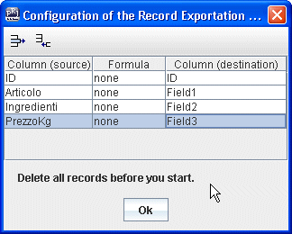 cliccando due volte nella colonna (sorgente) e nella colonna (desrtinazione) potremo selezionale il campo da cui prelevare il valore e il campo in cui scrivere. E' anche possibile inserire una formula per manipolare, se necessario, il dato prima di importarlo. Tutti i record della tabella Origine verranno scritti nella tabella Destinazione, ma solo i campi selezionati. Prima di importrae i record la tabella Destinazione verrà resettata, cioè verranno cancellati tutti gli eventuali precedenti record. |